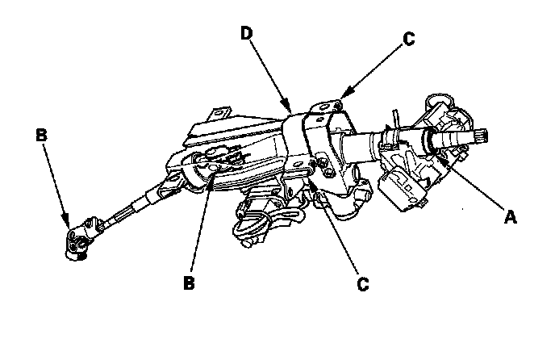

Component Tests and General Diagnostics
Steering Column/Tilt/Telescopic Inspection^ Check the steering column ball bearing (A) and the steering joint bearings (B) for play and proper movement. If any bearing is noisy or has excessive play, replace the steering column as an assembly.
^ Check the sliding capsules (C) for distortion or breakage. If there is distortion or breakage, replace the steering column as an assembly.
^ Check the tilt mechanism and telescopic mechanism for movement and damage.
^ Check the absorbing plates (D) for distortion or breakage. If there is distortion or breakage, replace the steering column as an assembly.
